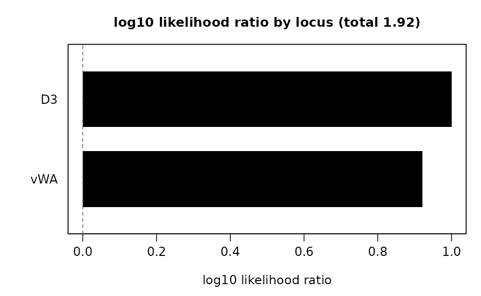
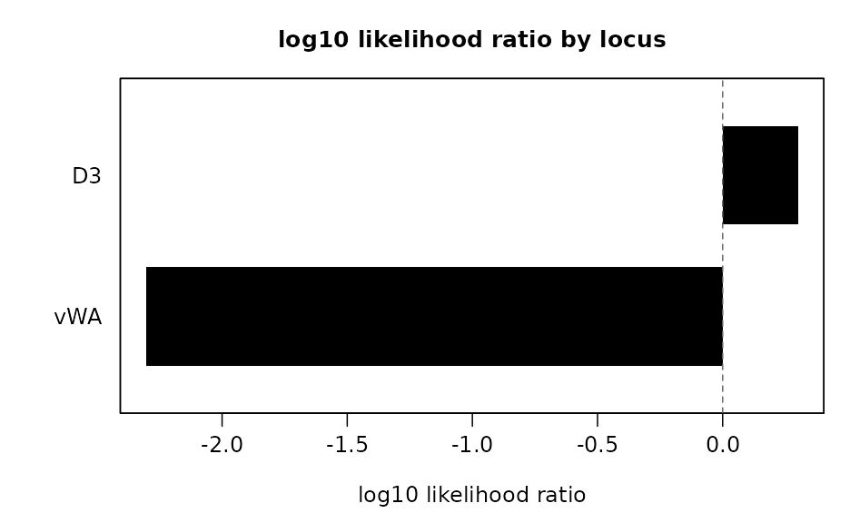
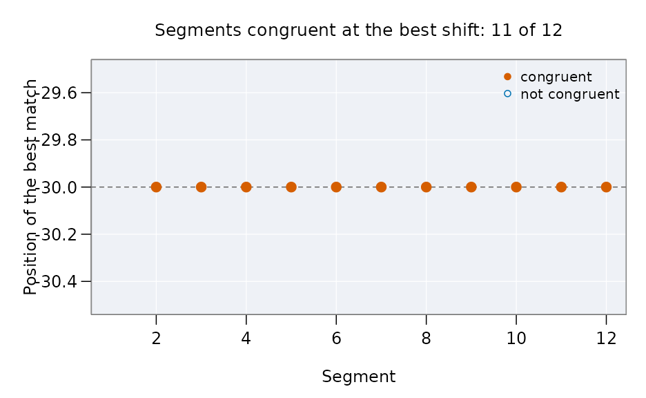

Forensic evidence: likelihood ratios and their calibration
Source:vignettes/forensics.Rmd
forensics.RmdLikelihood ratios for forensic comparisons, how well a system that reports them is calibrated, and the plots that show it.
Each section is one help page: what the function is for, the example
of its help page as it runs, and the plot of its result where the
package draws one. ?name gives the arguments and the value
in full.
Genotype match probability
gtmp(): The chance that an unrelated person from the
same population shares a DNA profile, locus by locus and overall. With
theta = 0 this is the product rule (p^2 for a
homozygote, 2pq for a heterozygote). A positive theta
applies the Balding-Nichols correction for shared ancestry. That never
makes a homozygote match rarer than the product rule says; it can make a
heterozygote match rarer when both alleles are common. See
proof("gtmp").
Posterior probability from a likelihood ratio
lrpost(): Turns a likelihood ratio into the probability
of the first hypothesis, which needs a prior. A large ratio with a small
prior can still leave that probability low; reading the ratio as the
probability is the prosecutor’s fallacy. See
proof("lrpost").
lrpost(lr = 1e6, prior = 1 / 5e6)
#> [1] 0.1666667Log-likelihood-ratio cost
cllr(): Scores a set of likelihood ratios against the
truth. Ratios from same-source comparisons should be large and ratios
from different-source comparisons small. The cost is 1 for a system that
always answers 1. It is above 0 for any set of ratios, and tends to 0 as
the ratios of a system that separates the two kinds perfectly grow
without bound. See proof("cllr") and
cllrmin().
Log-likelihood-ratio cost after recalibration
cllrmin(): Splits the cost of a set of likelihood ratios
into min, their cost after recalibration with the
pool-adjacent-violators algorithm, which keeps their order and gives
each block of pooled ratios the value that costs that block least, and
cal, the rest (cllr - min). That
min is the least cost of every order-keeping recalibration,
so that cal is never negative, is not proved. A system can
separate the two kinds of comparison well and still report ratios that
are too large or too small. See proof("cllrmin") and
proof("lrcal").
Calibrated likelihood ratios
lrcal(): Recalibrates a set of likelihood ratios against
the truth with the pool-adjacent-violators algorithm, keeping their
order. The result can hold 0 and Inf: the data never
contradicted those ratios. See proof("lrcal").
Tippett plot
tipplt(): For each value on the axis, the share of
same-source and of different-source likelihood ratios above it. A good
system keeps the same-source curve high to the right of 0 and the
different-source curve low; where each crosses 0 shows the rate of
misleading evidence. proof() records no theorem for this
plot.
Empirical cross-entropy plot
eceplt(): The information a set of likelihood ratios
still leaves missing, across prior odds: for the ratios as reported, for
the same ratios after calibration, and for a system that always reports
1. Reported ratios above the last curve do harm at that prior. At even
prior odds the first two curves pass through the values of
cllrmin(). proof() records no theorem for this
plot.
Mixture likelihood ratio
mixlr(): The weight of a DNA mixture at one locus for
one account of who contributed against another. Each account names the
alleles of the mixture its known contributors do not explain and the
number of unknown contributors who must explain them. Peak heights,
drop-out and coancestry are not modelled. See
proof("mixlr").
Continuous DNA mixture likelihood ratio (gamma model)
gmixlr(): The weight of a DNA mixture for one account of
who contributed against another, from the peak heights, not only from
which alleles were seen. Each account names the reference profiles it
holds to be contributors (hp, the prosecution’s, usually
the person of interest and any undisputed contributor; hd,
the defence’s); the rest of the nc contributors are unknown
people whose genotypes are summed over. The model’s parameters are
fitted by maximum likelihood under each account separately and the ratio
of the two maxima reported, marker by marker and over all markers.
# a two-person mixture at two markers: is S a contributor, with the
# victim V, or are V and an unknown person?
peaks <- data.frame(locus = rep(c("D3", "vWA"), c(4, 3)),
allele = c(14, 15, 16, 17, 16, 17, 18),
height = c(1210, 380, 1150, 420, 1400, 1960, 610))
freq <- data.frame(locus = rep(c("D3", "vWA"), c(5, 5)),
allele = c(13, 14, 15, 16, 17, 15, 16, 17, 18, 19),
freq = c(0.05, 0.1, 0.25, 0.25, 0.2,
0.1, 0.2, 0.3, 0.2, 0.1))
ref <- data.frame(id = rep(c("V", "S"), each = 2),
locus = rep(c("D3", "vWA"), 2),
a1 = c(14, 16, 15, 17), a2 = c(16, 17, 17, 18))
gmixlr(peaks, freq, ref, hp = c("V", "S"), nc = 2, hd = "V")
#> gmixlr: 2 markers; log10 LR 1.920759, LR 83.32179
#> hyp loglik mu omega beta xi conv iter
#> hp -43.35714 1782.500 0.09470922 NA NA TRUE 9
#> hd -47.77985 1782.483 0.09471434 NA NA TRUE 12
#> mixture proportions:
#> hyp who m
#> hp V 0.7287494
#> hp S 0.2712506
#> hd V 0.7287524
#> hd U1 0.2712476
Kinship index
kinidx(): The weight of two DNA profiles for a stated
relationship against no relationship, locus by locus and overall. Loci
are taken as independent; there is no allowance for mutation or
coancestry. See proof("kinidx").
Paternity index
patidx(): The weight of the DNA evidence that an alleged
father is the father of a child, against an unrelated man, locus by
locus and overall. With the mother’s genotype the index uses the allele
the child must have received from the father; without it the index is
the parent-child kinidx(). There is no allowance for
mutation, so one inconsistent locus gives an index of 0. See
proof("patidx").
Pedigree likelihood ratio
pedlr(): The weight of DNA profiles for one family tree
against another: is this child the son of that man, are these remains
the missing brother of the people who reported him missing, are two
people full or half siblings. Each tree is a table of people and their
parents; people who are not typed (a dead parent, a missing relative)
are summed over. The likelihood of the profiles is computed under each
tree, marker by marker, and the ratio reported with its base-10
logarithm, the product over independent markers.
# is AF the father of C? The mother M is typed too.
trio <- data.frame(id = c("AF", "M", "C"), fid = c(NA, NA, "AF"),
mid = c(NA, NA, "M"))
alt <- data.frame(id = c("AF", "M", "C", "X"), fid = c(NA, NA, "X", NA),
mid = c(NA, NA, "M", NA))
geno <- data.frame(id = rep(c("AF", "M", "C"), 2),
locus = rep(c("D3", "vWA"), each = 3),
a1 = c(14, 15, 15, 16, 17, 17),
a2 = c(16, 17, 16, 18, 17, 19))
freq <- data.frame(locus = rep(c("D3", "vWA"), c(4, 4)),
allele = c(14, 15, 16, 17, 16, 17, 18, 19),
freq = c(0.1, 0.25, 0.25, 0.2, 0.2, 0.3, 0.2, 0.1))
pedlr(trio, geno, freq, alt)
#> pedlr: 2 markers, mutation model none
#> locus l1 l2 lr
#> D3 -2.90309 -3.204120 2
#> vWA -Inf -3.142668 0
#> log10 LR -Inf; LR 0
# the child's vWA allele 19 cannot come from AF without a mutation
pedlr(trio, geno, freq, alt, mut = "equal", rate = 0.002)
#> pedlr: 2 markers, mutation model equal
#> locus l1 l2 lr
#> D3 -2.904393 -3.204554 1.996002003
#> vWA -5.444349 -3.141802 0.004982566
#> log10 LR -2.002386; LR 0.009945212
Database search
dbsrch(): What a match found by trawling a database is
worth. np is the bound of the second National Research
Council report: the match probability times the number of profiles
searched. any is the exact chance of at least one chance
match among that many unrelated profiles, never above np.
post takes the other view (Balding and Donnelly): everyone
else in the database was excluded, so among pop possible
sources with equal prior the matching person’s probability of being the
source goes up, not down. See proof("dbsrch").
dbsrch(mp = 1e-9, n = 5e6, pop = 3e7)
#> np any post
#> 0.005000000 0.004987521 0.975609756Likelihood ratio of measured evidence
preslr(): Weighs measurements (a tissue density, a pXRF
calcium level, a marker of antemortem ingestion) under two competing
hypotheses, each a normal model of what the measurement would be: the
likelihood ratio is the probability of the evidence under H1 over that
under H2. Its verbal band follows the usual forensic scale on |log10
LR|: 0 none, up to 1 weak, 2 moderate, 3 moderately strong, 4 strong, 6
very strong, above extremely strong support. The ratio measures support,
not the probability that a hypothesis is true.
Two-level model for multivariate trace evidence
tlvc(), tlvlr(): tlvc()
estimates the background of the two-level normal model of Aitken and
Lucy (2004) from a reference collection,
x_ij = theta_i + e_ij, items
theta_i ~ N(mu, C) and measurements within an item
e_ij ~ N(0, U): the overall mean, the pooled within-item
covariance and the ANOVA between-item covariance (unbiased for any
pattern of replication). tlvlr() gives the likelihood ratio
of same source against different sources for two items (a control and a
recovered fragment, say) from their mean vectors, computed in logarithms
from Cholesky factors so that atypical or distant items give a finite
value.
Scott-Knott grouping of measurements
skp(): Splits sorted measurements into groups that
differ (Scott and Knott 1974) when the variance of one measurement is
known, as in the forensic glass version of Triggs, Curran, Buckleton and
Walsh (1997): a segment is split at the cut with the largest
between-groups sum of squares when that is significant at
alpha, judged against nsim simulated samples
of independent normal values with the known variance (a test of exact
size under that null).
Glass fragments recovered under transfer and persistence
tfrp(): The probability of recovering 0, 1, … fragments
of glass from a suspect under the transfer, persistence and recovery
model of Curran, Triggs, Buckleton, Walsh and Hicks (1998), with
uncertain parameters averaged over: the transfer amount and the distance
deterministically (by quadrature), the time since the offence exactly,
and the loss and recovery rates by nsim Monte Carlo draws
(exactly when every rate is fixed).
par <- c(80, 50, 0.5, 0.05, 0.8, 0.9, 0.1, 0.2, 0.4, 0.6, 0.05, 0.1,
0.5, 0.7, 1, 1, 0.5)
tfrp(par, ymax = 10, nsim = 100, seed = 1)$prob
#> y p se
#> 1 0 0.10287150 0.0010164458
#> 2 1 0.06268975 0.0006369714
#> 3 2 0.05098681 0.0005238537
#> 4 3 0.04475979 0.0004628842
#> 5 4 0.04070553 0.0004220358
#> 6 5 0.03776832 0.0003907530
#> 7 6 0.03548773 0.0003643062
#> 8 7 0.03362473 0.0003402004
#> 9 8 0.03204053 0.0003169996
#> 10 9 0.03064810 0.0002938519
#> 11 10 0.02938989 0.0002702679Lowess smoothing
lwss(): Robust locally weighted regression (Cleveland
1979) with the conventions of the classic implementation, so that the
fit equals that of stats::lowess(); the fitted values come
back in the order of the input, not sorted.
The Chumbley score for two tool-mark profiles
chmb(): Compares two striated tool-mark profiles by the
deterministic Chumbley score (Chumbley et al. 2010; Hadler and Morris
2018): each profile is trimmed and detrended by its lowess smooth, the
pair of windows of wopt points with the largest correlation
fixes the shift, and windows of wval points at that shift
are compared with windows at other shifts by a standardised Wilcoxon
rank-sum statistic.
Congruent matching profile segments (CMPS) of two bullet signatures
cmpsc(): How many pieces of one land engraved area’s
signature line up, at one common shift, with another’s: the CMPS score
of Chen et al. (2019), the count of congruent matching profile segments,
with its share of the segments. A high score points to the same barrel,
a low one to different barrels; no threshold is implied, since the
scores of same- and different-source pairs depend on the data and the
settings (Ju and Hofmann 2022).
set.seed(1)
a <- cumsum(rnorm(600, sd = 0.5)) + sin(seq_len(600) / 9)
b <- a[31:600] + rnorm(570, sd = 0.1)
cmpsc(a, b)
#> cmpsc: 11 of 12 segments congruent (0.9166667) at lag -30
cmpsc(a, cumsum(rnorm(570, sd = 0.5)))$score
#> [1] 2